iPhone: эволюция дизайна
2007-2024
Как менялось главное
устройство современности
Когда корпорация Apple только анонсировала выпуск своего первого телефона, в Сети смеялись, что в нём будет всего одна кнопка: «звонить», она же «не звонить». Сложно представить, но тогда все телефоны были кнопочными.
Первый iPhone вышел в 2007
году (том самом, который все хотят вернуть). Он стал революцией и определил дизайн и путь развития технологий на годы вперёд.
Вспомним, с чего всё
начиналось и к чему идёт.
Предыстория
Задолго до того, как на свет появились смартфоны, в Apple задумали создать революционное устройство — карманный компьютер. Разработки шли несколько лет, гаджет под названием Newton вышел 2 августа 1993 года.
Прототип наладонника был размером с VHS-кассету (если кто-то сейчас помнит, как они выглядели). Конечно, далеко не в каждый карман такое могло бы поместиться. Кроме того, он весил 400 граммов, не имел подсветки экрана, а стоил очень дорого.
Но самое главное, Newton мог распознавать рукописный текст лучше, чем предшественники. Но всё равно с ошибками: это стало поводом для язвительных насмешек в одной из серий «Симпсонов» в 1994 году.
И всё-таки спустя 13 лет Apple сделал то, что до этого ни у кого не получалось: смартфон, который изменил мир. Стив Джобс, представляя iPhone, заявил, что Apple переизобретает телефон.
Есть легенда, что вдохновением для внешнего вида iPhone послужил монолит из фильма Стэнли Кубрика «Космическая одиссея 2001 года» (который по сюжету запускал эволюционный сдвиг).
Всего за несколько месяцев после старта продаж по миру разошлись около 1,4 миллиона устройств. Журнал Time назвал iPhone «главным изобретением 2007 года», отметив дизайн, эргономику и интерфейс. Как предположили в издании, он должен был стать сильным толчком для развития гаджетов следующего поколения как у самой Apple, так и у её конкурентов.
Предыстория
И всё-таки спустя 13 лет Apple сделал то, что до этого ни у кого не получалось: смартфон, который изменил мир. Стив Джобс, представляя iPhone, заявил, что Apple переизобретает телефон.
Есть легенда, что вдохновением для внешнего вида iPhone послужил монолит из фильма Стэнли Кубрика «Космическая одиссея 2001 года» (который по сюжету запускал эволюционный сдвиг).
Всего за несколько месяцев после старта продаж по миру разошлись около 1,4 миллиона устройств. Журнал Time назвал iPhone «главным изобретением 2007 года», отметив дизайн, эргономику и интерфейс. Как предположили в издании, он должен был стать сильным толчком для развития гаджетов следующего поколения как у самой Apple, так и у её конкурентов.
iPhone
Впервые в истории вышло устройство с 3,5-дюймовым сенсорным экраном, для которого не нужен был стилус, с 2‑мегапиксельной камерой. iPhone был как iPod плюс телефон плюс интернет.
У него был мультисенсорный дисплей и футуристический пользовательский интерфейс с интуитивно понятным
дизайном. Его иконки были скевоморфичные, то есть с имитацией объёма, света, теней, бликов и текстуры.
2007
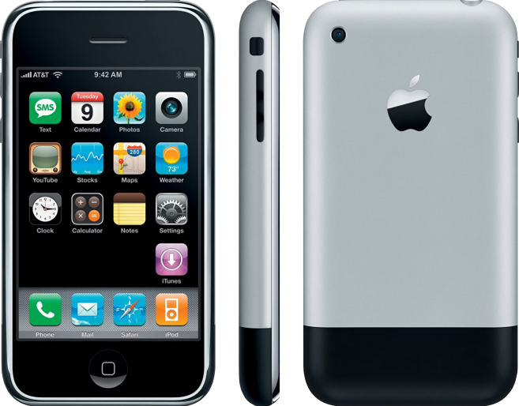
iPhone 3G
Новый iPhone сохранил тот же размер экрана, что и первый, но корпус был из глянцевого пластика. В нём появились 3G-связь, GPS-навигация, а минимальный объём памяти стал 8 ГБ, а не 4.
В iOS появился App Store. Он революционно и навсегда изменил способ разработки, использования и распространения программного обеспечения.
2008
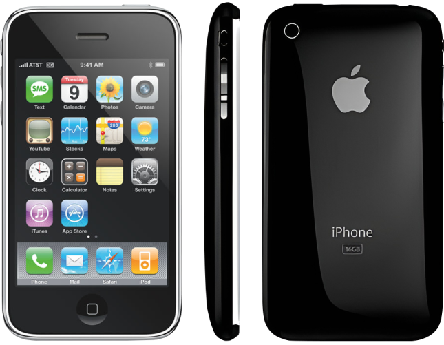
iPhone 3GS
Это улучшенная версия предыдущего iPhone — в два раза быстрее своего предшественника: буква S означала скорость.
Он научился копировать и вставлять текст, в функциях появился точный цифровой компас. Эта модель имела 3‑мегапиксельную камеру и записывала видео с разрешением VGA (480 p).
2009
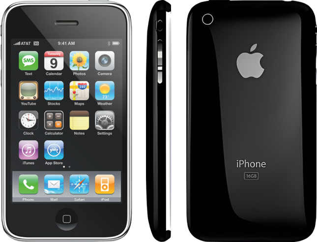
iPhone 4
Первый крупный редизайн: появилось необычное для того времени сочетание стеклянного корпуса с металлической рамкой. Корпус стал более квадратным со скруглёнными углами.
iPhone впервые выпустили с дисплеем Retina. Этот дисплей с разрешением экрана, чёткость которого ориентирована на предел восприятия глаза человека. Ещё появилась фронтальная камера
2010
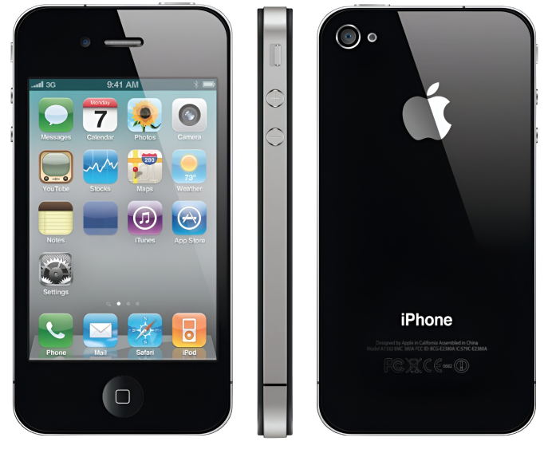
iPhone 4s
Этот год для компании был омрачён трагическим событием: на следующий день после презентации нового
айфона скончался Стив Джобс — человек, который создал Apple. Пост генерального директора занял Тим Кук.
Главной особенностью iPhone 4s стала Siri, умный голосовой помощник с чувством юмора и способностью отвечать на каверзные вопросы.
В iOS появилось облачное хранилище iCloud.
2011
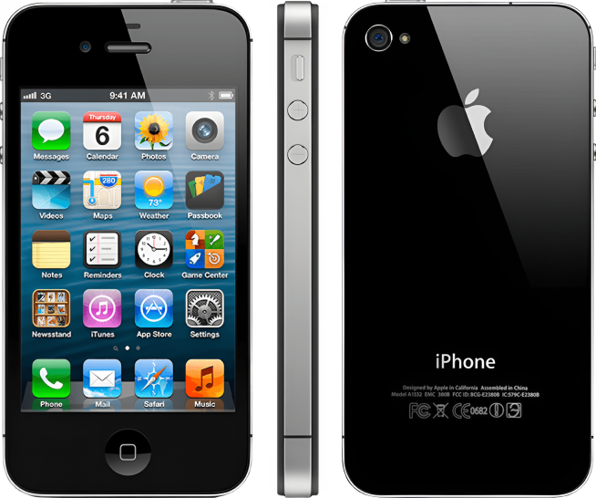
iPhone 5
Дисплей «пятёрки» стал чуть больше и шире, чем у предыдущих моделей: размер экрана вырос с 3,5 до 4 дюймов, а вместе с ним появилось соотношение сторон 16:9 (раньше было 3:2), стандартное для видеоформата.
Благодаря тому, что устройство оснастили новым чипом (который Apple впервые создала сама), корпус стал тоньше и легче. В дисплее улучшилась цветопередача.
2012
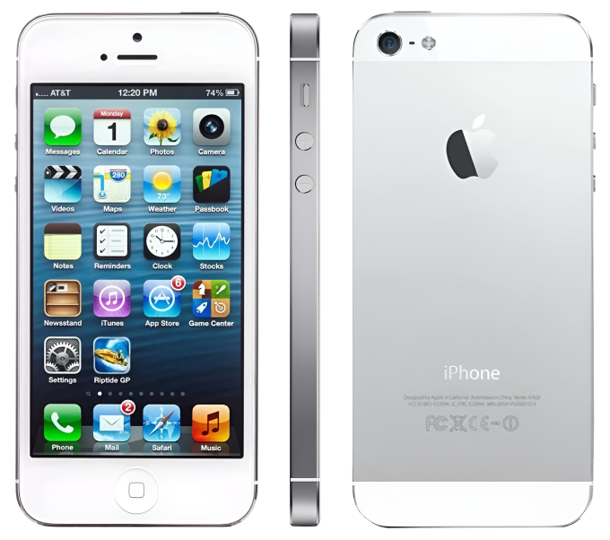
iPhone 5s
Отказ от скевоморфизма: стиль иконок, разработанный Джони Айвом, был простым, двухмерным и минималистичным. Основным шрифтом стал Helvetica Neue Ultra Light. В дизайне пользовательских интерфейсов началась новая эпоха.
В основной кнопке теперь работал Touch ID — сканер отпечатков пальцев. Эта инновация тоже в итоге распространилась на всю индустрию и стала одним из стандартов идентификации владельца.
2013
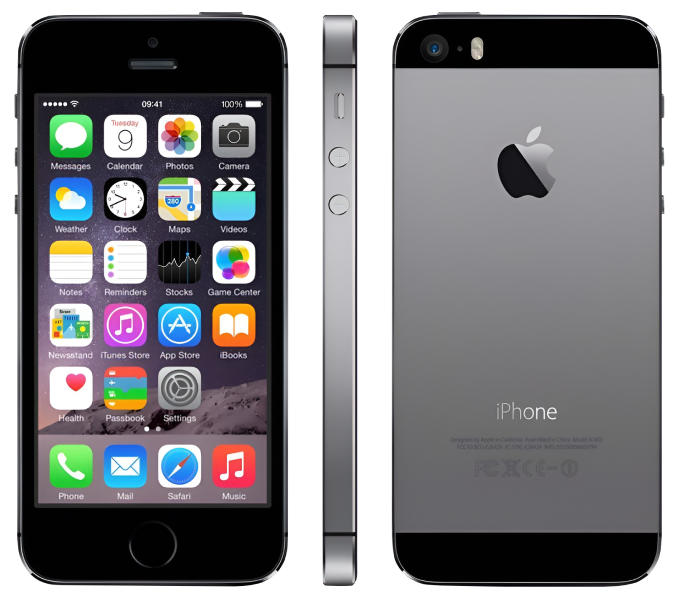
iPhone 5c
В новой серии 5c провели эксперимент с цветами. И с ценой: его продавали дешевле, чем 5s, так как корпус был сделан из поликарбоната — Джони Айв назвал его «неапологетически пластиковым».
Изменились боковые кнопки:
они стали вытянутыми (они такие до сих пор), а не круглыми, как раньше. Модель признали неудачной.
2013
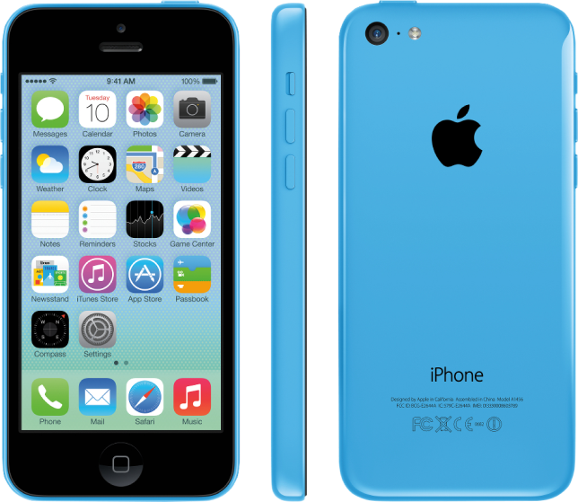
iPhone 6 / 6 Plus
К радости фанатов, Apple выпустили телефон с большим экраном. Более того, теперь можно было выбрать из двух вариантов: 4,7‑дюймовый и 5,5‑дюймовый. Форма снова стала обтекаемой и напоминала первые айфоны.
Камера стала быстрее находить фокус быстрой автофокусировкой и научилась держать его при съёмке видео.
2014
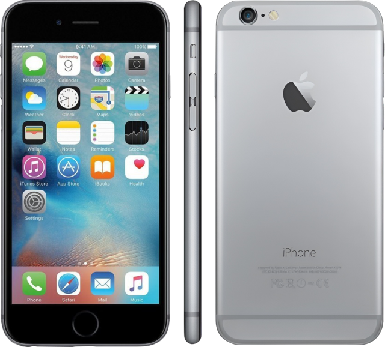
iPhone 6s / 6s Plus
Гаджет стал толще — иначе было не встроить новую технологию дисплея, которая позволяла приложениям воспринимать силу прикосновения. Apple назвала эту технологию 3D Touch, и она функционально была аналогом клика правой кнопкой мыши.
Это были первые айфоны,
которые записывали видео в формате 4K (конкуренты к тому времени уже
внедрили эту технологию, но с ограничениями).
2015
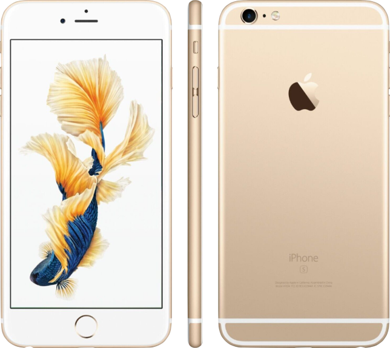
iPhone SE

Новинка, которая всё-таки смогла занять нишу бюджетных айфонов после неудачи с 5c. Он выглядел ровно как iPhone 5s, но начинка была поумнее.
2016
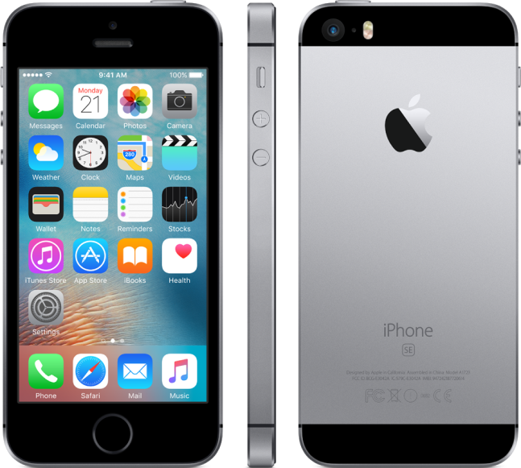
iPhone 7 / 7 Plus
Шок: Apple отказалась от разъёма для наушников в смартфоне. Шок-2: механическая кнопка «Домой» стала цифровой. Несмотря на возмущение аудитории, телефон стал рекордсменом по продажам.
Обе новинки получили защиту от воды и дополнительные объективы: теперь камерой можно было снимать с увеличением и в «Портретном режиме», который размывал фон на снимке.
2016
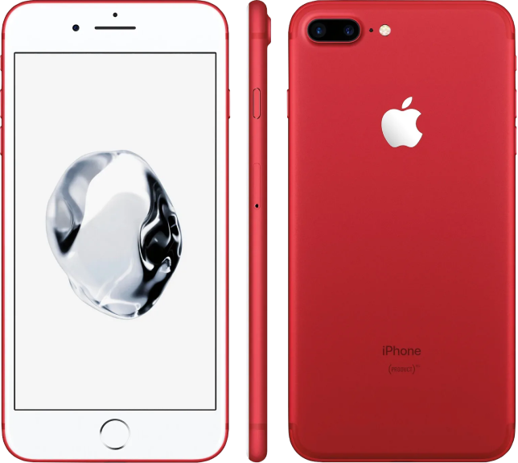
iPhone 8 / 8 Plus
Десятилетие iPhone! Но восьмёрки не стали революционными новинками Apple. Модель скорее
напоминала обновление
моделей iPhone 7
и не произвела сенсацию.
В обновлённых 4,7- и 5,5-дюймовых телефонах традиционно улучшили камеры и процессоры, а также добавили стеклянную заднюю панель для использования беспроводной зарядки.
2017
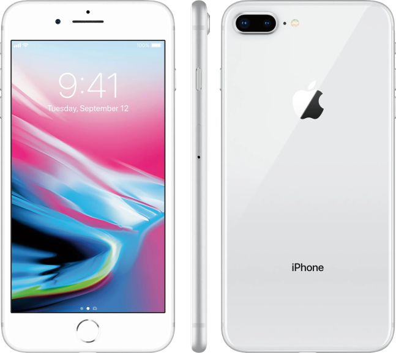
iPhone X
В iPhone X кнопки «Домой» не стало вообще: теперь OLED-дисплей занял всё место от края до края (правда, с вырезом, который обозвали «чёлочкой»). Корпус был из нержавеющей стали.
В нём впервые применили биометрию Face ID вместо сканера отпечатков пальцев, а в сообщениях iMessage появились персонажи Animoji, способные копировать мимику.
2017
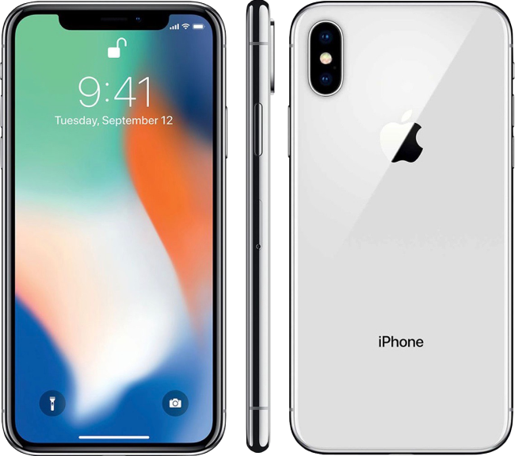
iPhone XS / XS Max
Он был похож на iPhone X 2017-го с небольшими улучшениями, а ещё Apple выпустила версию «Макс» с большим 6,5-дюймовым дисплеем.
Max был предшественником айфонов, которые теперь выпускаются с названием Pro.
2018
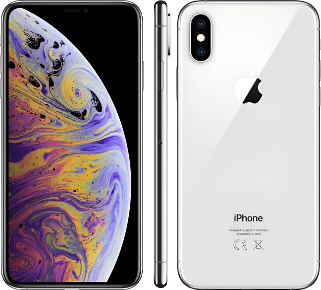
iPhone XR
Эта модель была в бюджетном классе: если в XS был премиальный корпус из нержавеющей стали,
то в XR — алюминиевый.
В этом айфоне не было телекамеры и 3D Touch, а экран сделали LCD вместо OLED.
2018
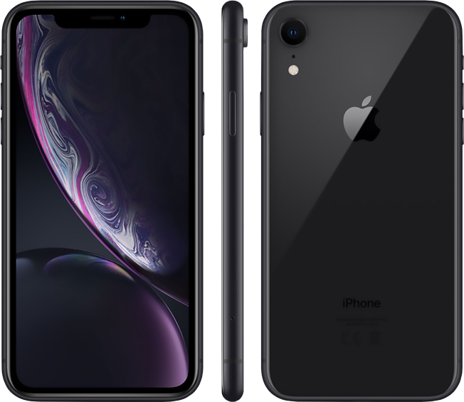
iPhone 11 / 11 Pro /
11 Pro Max
Формфактор iPhone XR, но сверхширокоугольная камера. Также устройства стали чуть толще: иначе в них не помещались более мощные аккумуляторы.
Заднюю панель iPhone 11 Pro сделали из матового стекла, а также впервые вышел айфон в модном цвете — тёмно-зелёном. В камере появился новый режим съёмки при слабом освещении.
2019
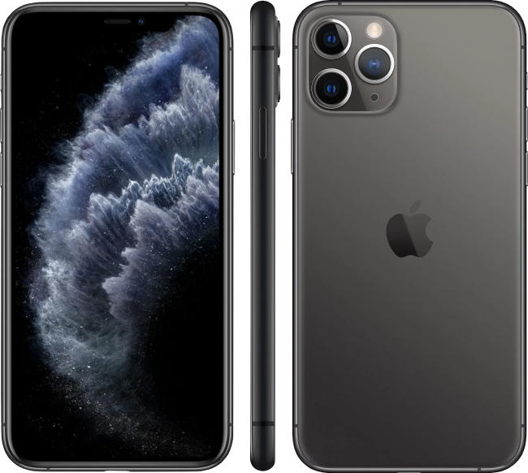
iPhone SE 2
Брат-близнец iPhone 8 (тут возрадовались те, кто предпочитал телефоны с кнопкой), но с более высокой производительностью и слегка улучшенной камерой и портретным режимом.
2020
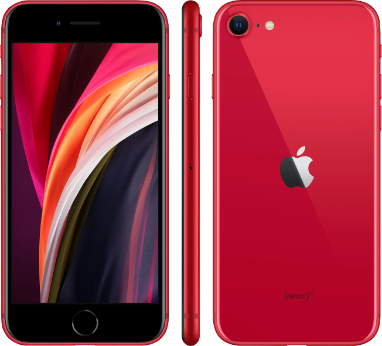
iPhone 12 / 12 mini /
12 Pro / 12 Pro Max
В iPhone 12 вернули легендарный дизайн «сэндвич» — стёкла с плоскими краями на корпусе, как в iPhone 4 2010 года. В «мозги» добавили поддержку 5G и зарядки MagSafe. Появилась уменьшенная версия с более слабым аккумулятором — iPhone 12 mini.
iPhone 12 Pro мог снимать фотографии в формате ProRes RAW. А ещё экран стал самым большим — 6,7 дюйма.
2020
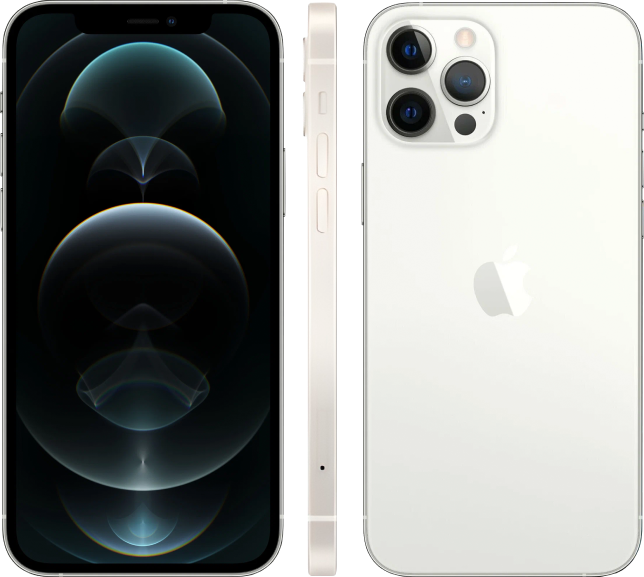
iPhone 13 / 13 mini /
13 Pro / 13 Pro Max
Apple заметно увеличила время автономной работы обеих моделей 13-го поколения по сравнению с 12‑м, а также наконец-то перестала выпускать свои флагманы с 64 ГБ памяти: 128 ГБ стал новым минимумом.
В 13 Pro появился трёхкратный оптический зум, поддержка макросъёмки и улучшенная работа в условиях низкой освещённости на широкоугольной и ультраширокоугольной камерах.
2021
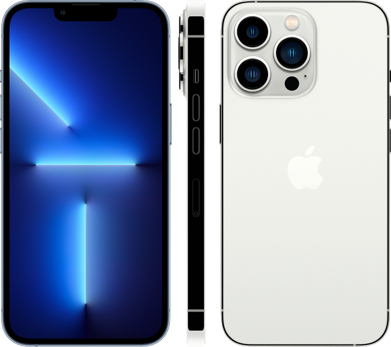
iPhone SE 3
На этот iPhone особых надежд никто не возлагал. Его формфактор тот же, что и у предыдущего iPhone SE 2014 года.
Экран небольшой, 4,7-дюймовый, с устаревшей LCD-технологией и разрешением ниже среднего. Но внутри самый быстрый процессор и ёмкий аккумулятор.
2022
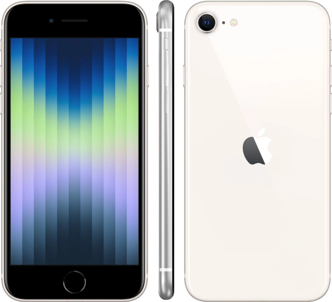
iPhone 14 / 14 Plus /
14 Pro / 14 Pro Max
Дизайн поменялся только в Pro‑версии. На месте чёлочки появился Dynamic Island — модуль камеры в форме таблетки. Он увеличивается и всплывает вместе с уведомлениями.
У модели Pro появилась камера с большим сенсором и разрешением 48 Мп. Улучшился кинематографический режим. Появился новый цвет корпуса — глубокий фиолетовый.
2022
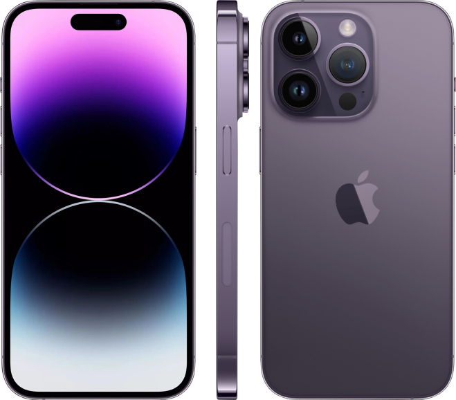
iPhone 15 / 15 Plus /
15 Pro / 15 Ultra
Обновления в основном технологические: 48‑мегапиксельный сенсор основной камеры с двухкратным увеличением матрицы для более качественного зума, чип A16 Bionic, а также порт USB-C.
В 15-м поколении титановая рама, а ещё они весят меньше предшественников.
2023
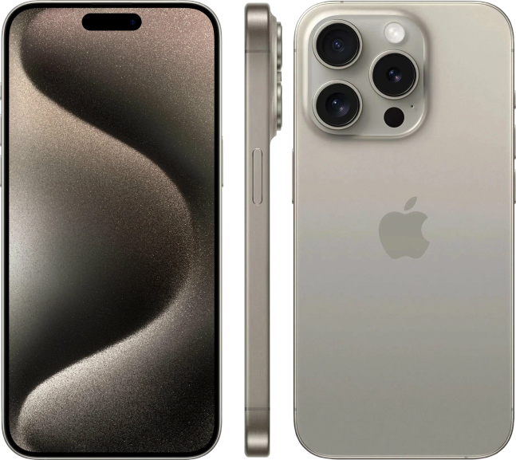
iPhone 16 / 16 Plus /
16 Pro / 16 Ultra
В iPhone 16 основные камеры расположили вертикально, как в iPhone X. Кнопку действий, ранее доступную только в «прошках», получили все модели.
Новая кнопка для камеры сенсорная, но реагирует на свайпы и силу давления.
2024
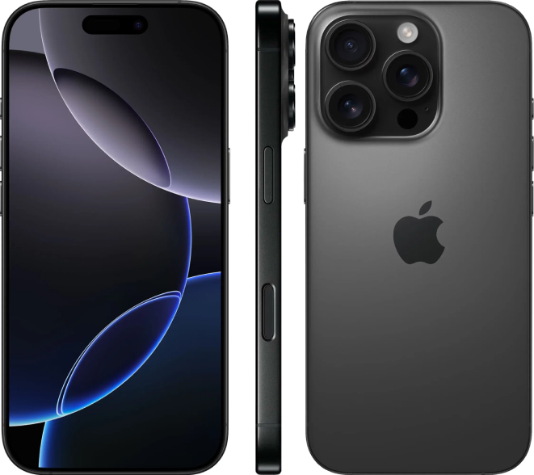